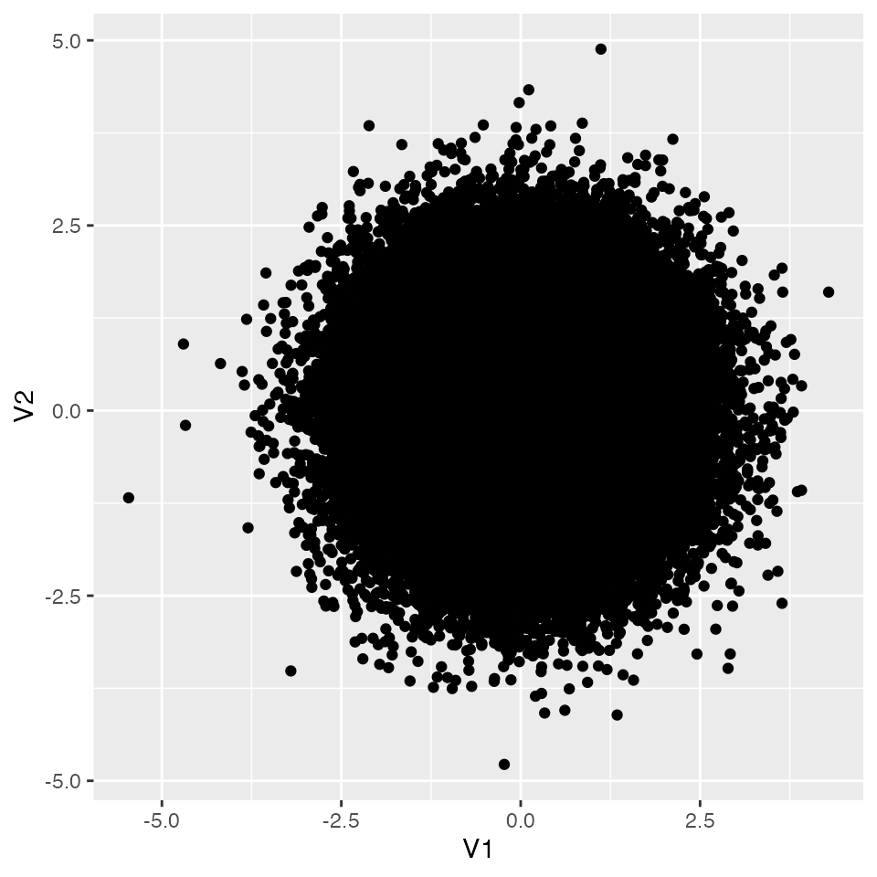

Null hypothesis significance testing (NHST) is perhaps the canonical setting in which psychologists apply statistical methods. The procedure is formalised to the point that some software packages will, given the data type, generate the results report automatically. The advantage is that every analyst reaches the same conclusion, and the procedure is mechanisable. The disadvantage is that a beginner who has not internalised the underlying mechanism may draw mistaken conclusions, and an unscrupulous analyst may extract whatever numbers are convenient. Scientific practice does not presuppose bad-faith actors; where such cases come to light, they can only be dealt with after the fact. Inadvertent misuse by inexperienced analysts is, unfortunately, more common still.
In psychology, the replication crisis describes the failure of published findings to replicate in subsequent studies; one diagnosed source of the problem is the misuse of statistical techniques (池田 and 平石 2016). With that in mind, we will retrace the procedure and logic of null hypothesis testing carefully.
7.1 Logic and procedure
7.1.1 Goal
NHST is a framework for deciding whether the findings from a sample are meaningful — whether they generalise to a population. It is helpful to think of it as a game with clearly defined methods and decision criteria. NHST sets a significance level and pits two opposing accounts (models) — the null hypothesis and the alternative hypothesis — against each other, declaring a winner. The reason we can speak of winning and losing is that the two hypotheses are exclusive: it cannot be the case that both are right or that both are wrong. But because the verdict is reached by inferential statistics, the verdict itself carries probabilistic uncertainty. The probability of incorrectly concluding “the alternative is correct” when the null is actually true is non-zero. Likewise, the probability of incorrectly concluding “the null is correct” when the alternative is actually true is non-zero. The former is a Type I error; the latter is a Type II error. We would like both probabilities to be zero, but they cannot be; we therefore name them \(\alpha\) and \(\beta\), and aim to bound each below some agreed level. NHST is the formalised procedure built to achieve this control. The significance level mentioned above is the tolerated value of \(\alpha\), set at 5% by convention in psychology.
Because NHST is fundamentally a procedure for controlling errors, the mindset of “engineering a significant result” is wholly misguided. NHST also combines mathematical inference with a human convention for adjudicating verdicts; do not read excess meaning into the result or take any single outcome too much to heart.
7.1.2 Procedure
A generic NHST procedure has five steps:
State the null and alternative hypotheses.
Choose a test statistic.
Set the decision criterion.
Compute the test statistic.
Decide.
NHST is applied to questions such as whether two group means differ, or whether a correlation differs from zero. It assumes that we are inferring from a sample to a population — not deciding the truth of a theoretical claim a priori, and not in the situation where the entire population is observed. It also reflects the fact that, with small samples, the confidence interval of a sample statistic is wide, and a framework is needed to decide anything at all.
Because the population state is unknown, we set up hypotheses. The null hypothesis (literally “empty”) asserts something like “no difference in means” (\(\mu_1 - \mu_2 = 0\)) or “zero population correlation” (\(\rho = 0\)). The alternative hypothesis is the exclusive complement: “the difference is non-zero” (\(\mu_1 - \mu_2 \neq 0\)) or “the correlation is non-zero” (\(\rho \neq 0\)). The reason the null is always “zero” is that, of the two mutually exclusive hypotheses, the non-zero side is infinitely subdivisible (a difference of 1, or 1.1, or 1.11, …) and cannot be tested point by point.
The choice of test statistic is typically presented as a fait accompli — \(t\) for a two-group mean difference, \(F\) for three or more groups, \(t\) again for a correlation — and rests on mathematical-statistical justifications. The decision criterion is conventionally 5%, and the test statistic is computed mechanically by a fixed formula. Because the decision is made against an objective standard, the whole procedure can be automated once the “situation × null hypothesis” pairing is classified.
But let us walk through it carefully here.
7.2 Testing a correlation
Take testing a correlation coefficient as our running example. In what is colloquially called the “test of no correlation,” we do not ask how large or how meaningful the correlation is; we ask whether it is non-zero. To be precise, we ask whether the population correlation is non-zero. A non-zero sample correlation, in a small sample, is unremarkable even when the population correlation is exactly zero.
Let us verify this concretely. First we build a dataset with no correlation. Using R’s MASS package, we draw from a multivariate normal:
We have drawn 10^{5} random values. The object X has two variables: a pair of standard-normal variables. We could simulate two independent variables by calling rnorm() twice, but viewing them as a pair leads naturally to a multivariate normal. A multivariate normal has, for each variable, a mean and SD (as in the univariate normal); for each pair of variables, a covariance. In mvrnorm(), mu is the mean vector and Sigma is the variance–covariance matrix — here a \(2 \times 2\) matrix with variances on the diagonal and covariances off-diagonal. A covariance is the product of the two SDs and the correlation coefficient.
Setting Sigma = matrix(c(1, 0, 0, 1), ncol = 2) specifies that the two variables are uncorrelated (each with SD 1). The option empirical = TRUE rescales the generated draws so that their empirical correlation matches the specified one exactly.
Visualise the result:
pacman::p_load(tidyverse)X %>%as.data.frame() %>%ggplot(aes(x = V1, y = V2)) +geom_point()

And numerically:
cor(X) %>%round(5)
[,1] [,2]
[1,] 1 0
[2,] 0 1
The generated random values are indeed uncorrelated. Now treat X as the population, and draw a sample of n = 20. What is the correlation in the sample? Use sample() to pick rows and assign the selected rows to s1:
This time the correlation is 0.1431698. Even when the population correlation is zero, an arbitrary sample of 20 points may exhibit a non-zero correlation. The question is how surprising such a value is. Put differently: if a researcher draws an \(n = 20\) sample and observes \(r = 0.14\), how plausible is it that the data came from a population with \(\rho = 0\)?
7.3 Sampling distribution and the test
Because the sample correlation is a random variable, it changes with every sample; how often each value appears can be described by its sampling distribution. What is that distribution? Let us approximate it by simulation, repeating the sampling many times.1
The histogram shows that with \(n = 20\), sample correlations of \(r = 0.3\) or even \(r = 0.4\) are not at all unusual even when the population correlation is exactly zero.
The sampling distribution also looks roughly symmetric. Mathematical statistics tells us that, for a correlation, transforming the sample correlation as below yields a quantity following a \(t\)-distribution with \(n - 2\) degrees of freedom:
The test of a correlation proceeds from there. Walking through the procedure with \(n = 20\) and an observed sample correlation \(r = 0.5\):
The null hypothesis is \(\rho = 0.0\); the alternative is \(\rho \neq 0.0\).
The test statistic is the \(t\) obtained from \(r\) via the transformation above.
The decision criterion is \(\alpha = 0.05\): we want the probability of incorrectly rejecting \(\rho = 0\) to be at most 5%.
Compute the test statistic. With \(n = 20\) and \(r = 0.5\), \[t = \frac{0.5 \times \sqrt{18}}{\sqrt{1 - 0.5^2}} = 2.449.\]
The probability that the absolute value of the sample correlation exceeds 0.5, derived from the \(t\) distribution, is computed as below. Alternatively, the critical value that bounds the central 95% of the \(t\) distribution is computed as below.
(1-pt(0.5*sqrt(18) /sqrt(1-0.5^2), df =18)) *2
[1] 0.02476956
qt(0.975, df =18)
[1] 2.100922
Note an important subtlety: the test asks whether we can reject \(\rho = 0\), so the sign of the correlation is irrelevant — we work in absolute value. pt() returns the cumulative area up to a given point; subtracting from 1 gives the upper-tail area. The \(t\) distribution is symmetric, so doubling gives the two-tailed probability. If this is below 5%, we declare significance. Here, the test is significant.
A wording note: this probability is the probability of obtaining a value at least as extreme as the observed one, not the probability of obtaining the observed value itself. Probabilities correspond to areas, and a single point has no area.
qt() returns the critical value; if our test statistic exceeds it, we declare significance. Here the test statistic is \(t(18) = 2.449\), larger than the critical value \(2.100\), so we declare significance.
7.4 The two error probabilities
We have been deliberate about the calculation; in practice the analyst has a single sample and computes a single test statistic. Because the data are precious, it is easy to lose sight of the fact that they are a single draw from a sampling distribution.
In R, the correlation test is done with cor.test(). Below we use mvrnorm() to simulate data with a population correlation of 0.5:
Pearson's product-moment correlation
data: sampleData[, 1] and sampleData[, 2]
t = 2.4495, df = 18, p-value = 0.02477
alternative hypothesis: true correlation is not equal to 0
95 percent confidence interval:
0.07381057 0.77176071
sample estimates:
cor
0.5
In the output, the \(t\) value, the degrees of freedom, and the \(p\)-value correspond to the example above. The confidence interval for the correlation and the sample correlation are also reported. Since the confidence interval does not include zero, the null hypothesis is rejected.
We already know that a sample drawn from a zero-correlation population can produce a value like 0.5 — even though, on average, a zero population correlation tends to produce small sample correlations. The lesson is not to read too much into a single sample statistic (at least when generalisation is in scope).
The null hypothesis is “the population correlation is zero,” and rejecting it means only that “we cannot say the population correlation is zero.” It does not follow that the population correlation must be near 0.5, nor that “\(p = 0.024\), well below 5%, is strong evidence.” These inferences hover over a counterfactual scenario in which \(\rho = 0\); they say nothing about how large \(\rho\) actually is. Misreading on this point is common; be careful.
With this picture in mind, Type I and Type II errors become concrete. A Type I error is the probability, under the null, of rejecting the null based on the sample statistic — exactly what the procedure above computes.
From a slightly different angle: cor.test() reports the confidence interval. By default this is a 95% interval. Below we ask what fraction of these intervals correctly contain the population correlation — which here is the null value, \(\rho = 0\). The conf.int field of the returned object holds the bounds; we set up a results data frame in advance and use ifelse() to flag containment.
In this run, the intervals contained the true correlation 95% of the time — i.e., they missed 5% of the time. The goal of holding the Type I error rate at 5% has been met.
For the Type II error — the probability of accepting the null when the null is actually false — we need a population in which the null is false. Let us put the population correlation at 0.5:
The population correlation is 0.5 — the null should be rejected — but 35.58% of tests fail to reach significance. In psychology, the conventional target is \(\beta < 0.2\) (equivalently, power \(> 0.8\)), so this design is underpowered.
In practice we do not know the true population correlation; it could be 0.3, or \(-0.5\), or something else. Type II error is therefore not directly under the researcher’s control; the best one can do is choose variables for which a non-trivial correlation seems plausible.
Both Type I and Type II error rates are functions of the sample size and the effect size (here, the magnitude of the population correlation). The researcher can choose the sample size, so given a target effect and a target error rate, sample size can be chosen rationally.
7.5 Exercises
From a population with \(\rho = 0\), draw a sample of size 10 and compute the sample correlation. Approximate the sampling distribution by a histogram over many simulated samples.
Repeat with a sample size of 50. How does the distribution change compared with \(n = 20\) or \(n = 10\)?
Given \(n = 50\) and a sample correlation of \(r = -0.3\), is the test significant? Use cor.test() and write up the test statistic and your conclusion.
With a sample correlation of \(r = -0.3\), perform the test for \(n = 10, 20, 50, 1000\) using cor.test() and tabulate the results. What does the tabulation show?
Suppose \(\rho = -0.3\). With a sample size of 20, what is the (approximate) statistical power? Approximate it by simulation.
One could skip this extra step and just call mvrnorm() repeatedly with sample size 20. The two-step framing — population then sampling — is used to make the population concrete.↩︎